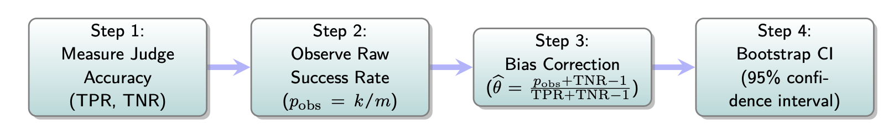

The following code is for lesson 5: Architectur3 - Specific Evaluation stragetis
2 & 3: Refine LLM Judge
| Step | Description |
|---|---|
| Split Labeled Traces | - Label ~100–200 traces for a specific failure mode - 10–20% train, 20–40% dev, rest for test - 🚫 Never look at test set |
| Evaluate LLM judge on Dev Set | - Use few-shot examples from train set only for LLM judge prompt - Judge predicts 1 for success and 0 for failure - Compute TPR (True Positive Rate) and TNR (True Negative Rate) - ✅ High TPR: good at identifying success - ✅ High TNR: good at identifying failures |
| Improve LLM judge prompt | - If < 85% TPR or TNR, keep refining the judge prompt - Look at dev set failures to improve prompt - Add or change few-shot examples - Improve definitions of failure in prompt |
| Verify high TPR/TNR on dev set | - If you cannot get > 85% TPR and TNR, split up your failure mode into multiple failure modes |
📘 Our LLM Judge is Good, But Not Perfect... So What?
-
We've refined our LLM-as-Judge on the Dev Set.
It has good TPR & TNR (might not be perfect, but that’s okay). -
Now we want to use this judge to measure how often our
main NurtureBoss pipeline succeeds (or fails) on
new, unseen production data.
📘 Our LLM Judge is Good, But Not Perfect... So What?
- The True Success Rate (θ) for "helpfulness" is unknown.
-
But, a human can’t evaluate all traces! Can we use the LLM judge?
-
The Problem: Our LLM-as-Judge isn't perfect (its TPR/TNR aren't 100%).
- If we run our judge on 1000 new NurtureBoss responses, and it says 950 "Pass", is our true success rate 95%?
- ⌠No! The raw % from our judge is a biased number due to its own errors.
- If LLM Judge has lots of false positives, the true success rate is < 95%.
